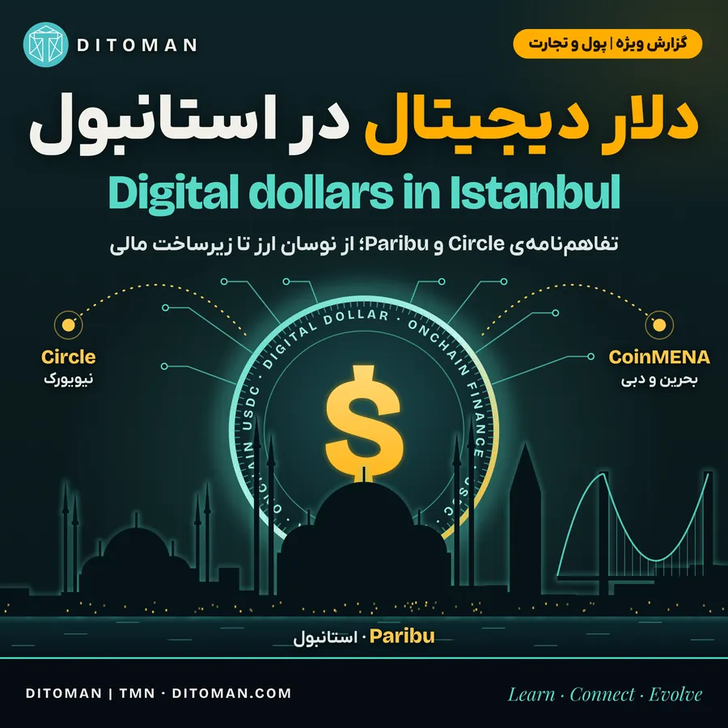
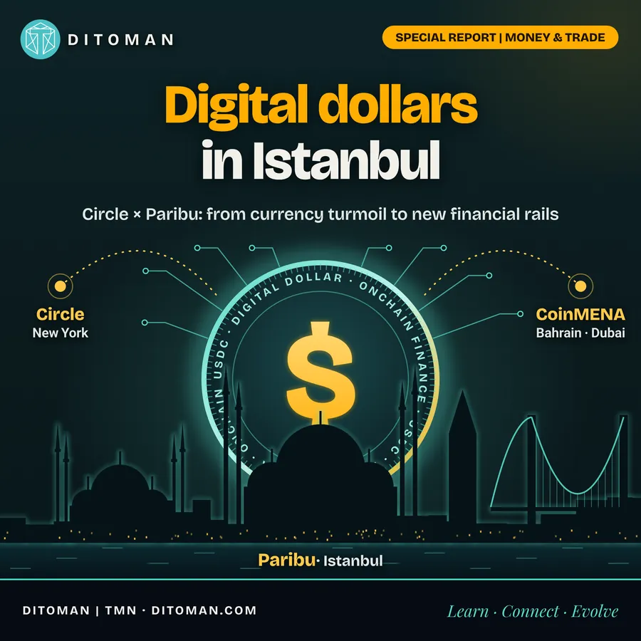

دلار دیجیتال در استانبول؛ ترکیه از دل نوسان ارز، زیرساخت مالی میسازد
Digital dollars in Istanbul: how Türkiye is turning currency turmoil into financial infrastructure
تفاهمنامهی Circle، صادرکنندهی USDC، با Paribu؛ سازوکار دلار دیجیتال، درس ترکیه از تورم ۸۵ درصدی، جایگاه ایران و فرصتهای آینده
The Circle–Paribu MOU: how digital dollars work, Türkiye’s lesson from 85% inflation, where Iran stands and the opportunities ahead
سوم آذر ۱۴۰۵، شرکت آمریکایی Circle، صادرکنندهی دلار دیجیتال USDC، با Paribu، یکی از بزرگترین پلتفرمهای دارایی دیجیتال ترکیه، تفاهمنامهای امضا کرد تا گسترش دلار دیجیتال و خدمات مالی روی بلاکچین در ترکیه را بررسی کنند. این گزارش فقط دربارهی یک قرارداد نیست. دربارهی این است که پول امروز چطور ساخته و جابهجا میشود، چرا کشوری که چهار سال پیش تورم ۸۵ درصدی داشت حالا زیرساخت مالی آینده را میسازد، و ما در ایران از آن چه یاد میگیریم.
در یک نگاه
- خبر: Circle و Paribu در دفتر مرکزی Circle در نیویورک تفاهمنامه امضا کردند. اعلام رسمی از استانبول بود
- ماهیت: تفاهمنامهی «بررسی فرصتها» است، نه راهاندازی قطعی یک سرویس تازه
- چیزی که از قبل کار میکند: Paribu از روز راهاندازی شبکهی Arc (۲۵ شهریور ۱۴۰۵) واریز و برداشت USDC روی این شبکه را فعال کرده است
- درس بزرگ: ترکیه در اوج بحران لیر قانون رمزدارایی نوشت، مجوز داد و حالا شریک زیرساخت مالی جهانی است
- ایران: Circle ایران را در فهرست مناطق تحریمی دارد؛ این توافق راهی برای پرداخت ایرانی باز نمیکند، اما نقشهی تجارت آیندهی همسایهها را نشان میدهد
1. امروز چه اتفاقی افتاد؟
بر اساس اطلاعیهی رسمی دو شرکت که از طریق PR Newswire منتشر شد، یاسین اورال، بنیانگذار و مدیرعامل Paribu، و جرمی آلر، مدیرعامل Circle، این تفاهمنامه را امضا کردند. نسخهی Paribu را هم در وبلاگ رسمی Paribu میشود خواند.
| حوزهی همکاری | یعنی چه؟ |
|---|---|
| دسترسی به USDC | سادهتر شدن خرید، نگهداری و انتقال دلار دیجیتال در ترکیه |
| محصولات روی شبکهی Arc | سرویسهای مالی روی بلاکچین تازهی Circle |
| توکنیزه کردن دارایی واقعی | تبدیل اوراق، کالا یا ملک به توکن قابل معامله |
| نگهداری سازمانی | خدمات امانتداری دارایی دیجیتال برای شرکتها و نهادها |
| آموزش و پژوهش | برنامههای مشترک برای توسعهدهندگان و دانشگاهها |
نکتهی مهم:
این همکاری از صفر شروع نمیشود. Paribu در ترکیه شریک روز اول شبکهی Arc بود و بخش امانتداری سازمانیاش، Paribu Custody، هم از Arc پشتیبانی میکند. ولی خدمات تازهای که تفاهمنامه از آنها حرف میزند هنوز در مرحلهی بررسیاند و تاریخ راهاندازی اعلام نشده است.
2. قیمت ارز یا سازوکار ارز؟
این روزها نرخ ارز تیتر اول همهی گفتوگوهاست. خیلی از ما روزی چند بار قیمت دلار و تتر را نگاه میکنیم. ولی عدد امروز فقط نتیجهی آخر یک ماشین بزرگ است. کسی که سازوکار آن ماشین را بفهمد، برای فردا آمادهتر است.
ترکیه همین مسیر را رفته است:
مهر ۱۴۰۱ (اکتبر ۲۰۲۲) تورم سالانهی ترکیه به ۸۵٫۵ درصد رسید و لیر بهشدت سقوط کرد. ترکها هم ساعتبهساعت نرخ دلار را چک میکردند. اما در همین سالها ترکیه قانون رمزدارایی نوشت، برای صرافیها مجوز اجباری گذاشت، شرکتهایش امانتداری دیجیتال ساختند و حالا با Circle تفاهمنامه امضا میکنند. تورم ترکیه در مهر ۱۴۰۵ به ۲۹٫۷۷ درصد رسیده است. طوفان گذشت؛ زیرساخت ماند.
ایران هم همیشه با نوسان ارز زندگی کرده است.
این روزها هم میگذرد و به امید خدا روزهای بهتر برمیگردد. چیزی که از این دوره برای ما میماند، دانشی است که امروز جمع میکنیم.
سه چیزی که بیشتر از عدد امروز ارزش دانستن دارد:
- پول چطور ساخته میشود و پشتوانهاش چیست؟ بخش ۳
- پول چطور جابهجا و تسویه میشود؟ بخش ۴ و ۵
- چه کسی میتواند جلوی پول را بگیرد؟ بخش ۹ و ۱۲
3. USDC چیست و چطور یک دلار میماند؟
USDC یک «استیبلکوین» است: توکنی روی بلاکچین که قرار است همیشه برابر یک دلار آمریکا بماند. صادرکنندهاش شرکت Circle است که سهامش در بورس نیویورک با نماد CRCL معامله میشود. دولت آمریکا صادرکنندهی آن نیست.
ساخته شدن (Mint):
یک نهاد مالی دلار واقعی به Circle میدهد و Circle به همان اندازه USDC میسازد.
بازخرید (Redeem):
نهاد USDC را پس میدهد، توکنها سوزانده میشوند و دلار برمیگردد. طبق شرایط رسمی USDC، Circle متعهد است هر یک USDC را با یک دلار بازخرید کند (منهای کارمزد در صورت وجود).
پشتوانه:
طبق همان شرایط، USDC بهطور کامل با داراییهای دلاری پشتیبانی میشود، عمدتاً پول نقد و اوراق کوتاهمدت خزانهی آمریکا. سود این ذخایر به دارندهی USDC نمیرسد و یکی از درآمدهای اصلی Circle است.
اندازهی امروز:
در فصل سوم ۲۰۲۶ بهطور میانگین ۷۳٫۳ میلیارد دلار USDC در گردش بود و حجم تراکنش زنجیرهای آن در همان سه ماه به ۱۳٫۹ تریلیون دلار رسید، ۴۹ درصد بیشتر از سال قبل (گزارش فصلی Circle).
فرقش با تتر (USDT):
تتر که ایرانیها بیشتر میشناسند، صادرکنندهی دیگری دارد (شرکت Tether). منطق هر دو یکی است: توکنی که با دارایی دلاری پشتیبانی میشود. تفاوت در صادرکننده، مقررات و نحوهی گزارش ذخایر است.
4. پول چطور از استانبول به آن سوی دنیا میرود؟
فرض کنید یک کارخانهی ترکیهای میخواهد بابت تجهیزات ۱۰۰ هزار دلار به یک فروشندهی خارجی واجد شرایط بپردازد.
| مسیر بانکی سنتی | مسیر بلاکچینی (USDC) | |
|---|---|---|
| مسیر پول | خریدار ← بانک مبدأ ← بانکهای واسطه ← بانک مقصد ← فروشنده | خریدار ← ارائهدهندهی مجاز ← شبکهی USDC ← ارائهدهندهی مقصد ← فروشنده |
| زمان | معمولاً از چند ساعت تا چند روز کاری | انتقال شبکهای در چند ثانیه |
| ساعت کاری | تابع ساعت کاری و تعطیلات بانکها | شبانهروزی، حتی در تعطیلات |
| ردیابی | پیامهای بینبانکی | ثبت عمومی و قابل پیگیری روی بلاکچین |
| هزینه | کارمزد چند واسطه و هزینهی تبدیل | کارمزد شبکه و هزینهی تبدیل ارز در دو سر مسیر |
این یک مدل مفهومی است. تبدیل لیر به دلار، احراز هویت و تسویه با بانک در دو سر مسیر جداگانه زمان و هزینه دارد.
یک قدم جلوتر:
قراردادهای هوشمند میتوانند پرداخت را به شرطی گره بزنند، مثلاً «پول وقتی آزاد شود که تحویل کالا در گمرک تأیید شد». این همان چیزی است که در تجارت به آن «اعتبار اسنادی» میگوییم، این بار با کد بهجای کاغذ.
مثال تازه از آسیا:
بانک DBS سنگاپور شش روز پیش (۲۷ آبان) اعلام کرد مشتریان سازمانیاش میتوانند شبانهروزی و مستقیم از طریق این بانک USDC بسازند و بازخرید کنند، بدون محدودیت ساعت کاری بانک.
5. Arc؛ بزرگراه تازهی Circle
شبکهی Arc بلاکچین لایهی یک خود Circle است که شبکهی اصلیاش ۲۵ شهریور ۱۴۰۵ (۱۶ سپتامبر ۲۰۲۶) راه افتاد.
- کارمزد به دلار: کارمزد تراکنشها با خود USDC پرداخت میشود، نه با یک توکن نوسانی
- قطعیت زیر یک ثانیه: تراکنش در کمتر از یک ثانیه نهایی میشود
- سازگار با اتریوم (EVM): قراردادهای نوشتهشده با زبان Solidity روی آن اجرا میشوند
- اعتبارسنجهای بزرگ: طبق گزارش The Block، از میان ۱۱ نهاد اعتبارسنج اولیه نام BlackRock، Visa، Mastercard، DTCC و ICE آمده است
- سابقهی آزمایشی: شبکهی آزمایشی Arc از پاییز ۱۴۰۴ بیش از ۷۰۰ میلیون تراکنش پردازش کرده بود
6. درس ترکیه: از تورم ۸۵ درصدی تا زیرساخت مالی
۱۴۰۰ (آوریل ۲۰۲۱):
بانک مرکزی ترکیه استفاده از رمزداراییها در پرداخت را ممنوع کرد. این ممنوعیت هنوز پابرجاست و تفاهمنامهی امروز هم آن را تغییر نمیدهد.
۱۴۰۱ (اکتبر ۲۰۲۲):
تورم به ۸۵٫۵ درصد رسید؛ بالاترین رقم در بیش از دو دهه.
۱۴۰۳ (ژوئیه ۲۰۲۴):
اصلاحیهی قانون بازار سرمایه اجرا شد و صرافیهای رمزدارایی ملزم به گرفتن مجوز از هیئت بازار سرمایه (CMB) شدند. فعالیت بدون مجوز تا ۵ سال حبس دارد (راهنمای حقوقی CMS).
۱۴۰۴ (اکتبر ۲۰۲۵):
Paribu از CMB مجوز تأسیس یک شرکت کارگزاری بورس گرفت.
۱۴۰۵ (۲۰۲۶):
تورم به حدود ۳۰ درصد رسید و تفاهمنامه با Circle امضا شد.
بازاری بزرگ اما هنوز سفتهبازانه:
طبق گزارش Chainalysis، حجم سالانهی تراکنش رمزارز در ترکیه نزدیک ۲۰۰ میلیارد دلار و اول خاورمیانه و شمال آفریقاست؛ امارات با ۵۳ میلیارد دلار دوم است. همین گزارش هشدار میدهد که بخش بزرگی از این حجم سفتهبازی است، نه استفادهی واقعی. همکاریهایی مثل Circle و Paribu دقیقاً میخواهند این بازار را به سمت کاربرد واقعی ببرند: تسویهی تجاری، امانتداری و دارایی توکنیزه.
اقتصاد پشت این بازار:
تولید ناخالص داخلی ترکیه در ۲۰۲۵ حدود ۱٫۵۹ تریلیون دلار بود، با رشد ۳٫۶ درصد. شرکتهای زیرمجموعهی Paribu در ترکیه هم روی هم ۷ میلیارد لیر سرمایهی پرداختشده دارند.
7. Paribu و CoinMENA؛ پل ترکیه به خلیج فارس
آذر ۱۴۰۴ (دسامبر ۲۰۲۵)، Paribu صرافی CoinMENA را در معاملهای تا سقف ۲۴۰ میلیون دلار خرید؛ معاملهای که Tech.eu آن را بزرگترین خرید فینتک ترکیه خواند.
- مجوزها: CoinMENA از بانک مرکزی بحرین و نهاد ناظر دارایی مجازی دبی (VARA) مجوز دارد (The Block)
- دامنه: فعالیت در ۴۵ کشور و بیش از ۱٫۵ میلیون کاربر
- نکتهی جالب: خود Circle پیشتر از سرمایهگذاران CoinMENA بوده است
| شرکت | جایگاه | نقش در این زنجیره |
|---|---|---|
| Circle | آمریکا | دلار دیجیتال و زیرساخت جهانی |
| Paribu | ترکیه | بازار داخلی و خدمات سازمانی |
| CoinMENA | بحرین و دبی | دسترسی به بازارهای خلیج فارس |
اگر خدمات مشترک توسعه پیدا کند و مجوزهای لازم صادر شود، این سه حلقه میتوانند بازارهای مالی ترکیه، کشورهای عربی و شبکهی جهانی دارایی دیجیتال را بیشتر به هم وصل کنند.
8. ترکیه، هاب انرژی و هاب پول
ترکیه سالهاست میخواهد از کشور مصرفکننده و مسیر عبور انرژی، به مرکز تجارت انرژی منطقه تبدیل شود (گزارش کامل دیتومان دربارهی هاب انرژی ترکیه).
| خط لوله | کارکرد | ظرفیت اسمی سالانه |
|---|---|---|
| TurkStream | گاز روسیه | ۳۱٫۵ میلیارد مترمکعب |
| Blue Stream | گاز روسیه | ۱۶ میلیارد مترمکعب |
| TANAP | گاز آذربایجان | ۱۶ میلیارد مترمکعب |
| TAP | ادامهی مسیر گاز آذربایجان به اروپا | ۱۰ میلیارد مترمکعب |
| تبریز – آنکارا | گاز ایران | قرارداد تا ۹٫۶ میلیارد مترمکعب |
| باکو – تفلیس – جیهان | نفت آذربایجان | — |
| کرکوک – جیهان | نفت عراق | — |
منابع: وزارت خارجهی ترکیه و بررسی ۲۰۲۶ آژانس بینالمللی انرژی. ظرفیت اسمی با حجم واقعی انتقال فرق دارد.
اما هاب واقعی انرژی فقط لوله نیست. بازار معامله، تأمین مالی، بیمه، قیمتگذاری و تسویهی بینالمللی هم لازم است. بلاکچین، اگر قانونی و سازمانی پذیرفته شود، میتواند اینجا کمک کند:
- تسویهی معاملات انرژی: کوتاهتر شدن فاصلهی تحویل گاز یا برق تا دریافت پول
- تأمین مالی پروژه: انتشار اوراق دیجیتال برای نیروگاه و خط انتقال
- گواهی برق تجدیدپذیر: ثبت قابل پیگیری منشأ هر مگاواتساعت
- تجارت برق: تسویهی خودکار بر اساس دادهی تأییدشدهی تولید و مصرف
در تفاهمنامهی امروز هیچ قرارداد نفت، گاز یا برقی اعلام نشده است. این بخش تحلیل ظرفیت آینده است.
9. ایران کجای این تصویر است؟
ایران و ترکیه مرز مشترک، تجارت انرژی، گردشگری، مواد اولیه و کالای مصرفی دارند. طبق دادههای مؤسسهی آمار ترکیه که در پژوهش ELIAMEP آمده:
| سال | صادرات ترکیه به ایران | صادرات ایران به ترکیه | کل تجارت |
|---|---|---|---|
| ۲۰۲۳ | ۳٫۳۱ میلیارد دلار | ۲٫۱۸ میلیارد دلار | ۵٫۴۹ میلیارد دلار |
| ۲۰۲۴ | ۳٫۲۳ میلیارد دلار | ۲٫۴۵ میلیارد دلار | ۵٫۶۸ میلیارد دلار |
| ۲۰۲۵ (۱۱ ماه) | ۲٫۸۰ میلیارد دلار | ۲٫۳۰ میلیارد دلار | ۵٫۱۰ میلیارد دلار |
گاز:
قرارداد ۲۵ سالهی گاز ایران و ترکیه ژوئیهی ۲۰۲۶ (مرداد ۱۴۰۵) به پایان رسید. ترکیه در شش ماه اول ۲۰۲۶ حدود ۴٫۵ میلیارد مترمکعب گاز ایران وارد کرد، ۳۴ درصد بیشتر از سال قبل (ایران اینترنشنال).
یک واقعیت روشن:
Circle در شرایط بهروزشدهی ۲۳ مهر ۱۴۰۵، ایران را همراه کوبا و کرهی شمالی جزو مناطق تحت تحریم سراسری آورده و حق دارد آدرسهای مرتبط با فعالیت ممنوع را مسدود کند. پس این توافق مسیر پرداخت مستقیم ایران و ترکیه را باز نمیکند و محدودیتهای بانکی ایران را برنمیدارد.
پس چه سودی برای ما دارد؟
همسایههای ما دارند ابزارهایی را آزمایش میکنند که ممکن است استاندارد تجارت منطقه در سالهای آینده شود. شرکت ایرانیای که امروز با ترکیه کار میکند، فردا با طرفی روبهرو است که پرداخت شبانهروزی، قرارداد هوشمند و دارایی توکنیزه را میشناسد. هرچه زودتر این زبان را یاد بگیریم، روزی که درها بازتر شود آمادهتریم. ایران هم مسیر خودش را در نوسازی پرداخت دارد؛ مثلاً چک دیجیتال.
10. فرصتهای شغلی و مهارتهای آینده
این موج فقط برای سرمایهگذارها نیست. برای کسی که مهارت درست را دارد، کار میسازد:
- توسعهدهندهی بلاکچین: Arc با اتریوم سازگار است؛ کسی که Solidity بلد است، روی دهها شبکه کار پیدا میکند
- متخصص انطباق و مبارزه با پولشویی: هر صرافی و بانکی که وارد این بازار میشود به آن نیاز دارد
- کارشناس تأمین مالی تجارت: کسی که هم اعتبار اسنادی و هم قرارداد هوشمند را بفهمد، کمیاب است
- حقوقدان دارایی دیجیتال: توکنیزه کردن اوراق و ملک بدون چارچوب حقوقی ممکن نیست
- امنیت و امانتداری: نگهداری کلید خصوصی نهادها، تخصصی جدا و پردرآمد است
11. ترکیه تنها نیست
| کشور یا منطقه | کاربرد احتمالی |
|---|---|
| 🇦🇿 آذربایجان | تجارت انرژی و تأمین مالی زیرساخت |
| 🇮🇶 عراق | تجارت کالا، تجهیزات و پیمانکاری در چارچوب مجاز |
| 🇦🇪 امارات | اتصال بازارهای مالی و خدمات دارایی دیجیتال |
| 🇬🇪 گرجستان | ترانزیت، لجستیک و تجارت منطقهای |
| 🇪🇺 اتحادیهی اروپا | تسویهی تجاری و دارایی توکنیزه |
| 🇸🇬 سنگاپور | ساخت و بازخرید شبانهروزی USDC از طریق DBS |
| 🇮🇷 ایران | ظرفیت فنی بلندمدت، با محدودیت جدی حقوقی و مالی فعلی |
این جدول ظرفیتهای احتمالی را نشان میدهد، نه کشورهای عضو توافق امروز. رقابت در صنعت رمزارز کمکم از خرید و فروش توکن به ساخت زیرساخت مالی نهادها رسیده است.
12. موانع و ریسکها
- ممنوعیت پرداخت: استفاده از رمزدارایی در پرداخت در ترکیه هنوز ممنوع است
- دلاری شدن: گسترش دلار دیجیتال میتواند وابستگی به دلار را بیشتر کند و کار سیاست پولی را سختتر
- خروج سپرده از بانکها: بخشی از منابع ممکن است از شبکهی بانکی سنتی بیرون برود
- مسدود شدن: صادرکننده میتواند آدرسها را مسدود کند
- امنیت و خطا: حملهی سایبری، اشتباه در آدرس و هزینهی تبدیل ارز همچنان وجود دارد
سرعت بلاکچین بهتنهایی تضمین نمیکند هر معاملهای ارزانتر یا سادهتر شود. هنوز هم حجم معاملات، بودجه و زمان راهاندازی خدمات تازه اعلام نشده است.
تحلیل دیتومان
ترکیه در محل اتصال سه شبکه ایستاده است: انرژی، حمل کالا و بازارهای مالی اروپا و آسیا. حالا دارد شبکهی چهارم را اضافه میکند: پول دیجیتال.
ارزش اصلی خبر امروز در قیمت یک رمزارز نیست؛ در کاربرد بلاکچین برای کم کردن اصطکاک تجارت واقعی است.
و برای ما:
عدد دلار هر روز عوض میشود. سازوکار پول، قواعد تسویه و مهارت ساختن، یک بار که یاد گرفته شود میماند. ترکیه از دل تورم ۸۵ درصدی زیرساخت ساخت. ایران هم بارها از دل نوسان عبور کرده و این بار هم عبور میکند. بیایید بهجای نگاه کردن به عدد، ماشین پشت عدد را یاد بگیریم.
یاد بگیر، وصل شو، رشد کن.
بیشتر بخوانید
منابع
- Paribu & Circle joint release (PR Newswire), 24 Nov 2026
- Paribu blog: Paribu–Circle MOU
- Circle: USDC Terms (last updated 15 Oct 2026)
- Circle: Arc mainnet launch, 16 Sep 2026
- The Block: Arc mainnet, validators
- DBS: DBS and Circle expand institutional access to USDC in Asia
- Circle Q3 2026 results (Mitrade summary)
- The Block: Paribu to buy CoinMENA (Dec 2025)
- Tech.eu: Paribu buys CoinMENA
- Hürriyet Daily News: Turkish inflation 29.77% (Oct 2026)
- Türkiye Today: 2025 GDP (TurkStat)
- CMS: crypto regulation in Türkiye
- Cointelegraph: Chainalysis on Türkiye's $200B crypto market
- ELIAMEP (2026): Turkey–Iran, managed rivalry
- Iran International: Turkey's gas pivot (Aug 2026)
- Türkiye MFA: energy strategy
- IEA: Türkiye 2026 review
آخرین بازبینی: ۳ آذر ۱۴۰۵. متن تفاهمنامه، شرایط USDC و ارقام اصلی را از منبع اصلی بررسی کردیم. آمار فصلی Circle را از گزارشهای منتشرشده نقل کردهایم. این گزارش آموزشی است و توصیهی سرمایهگذاری یا خرید و فروش نیست.